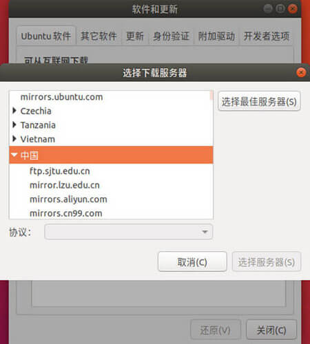
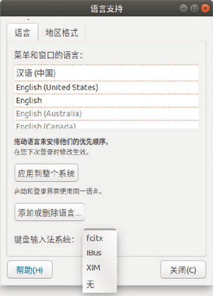

图形界面Linux管理
部分用户选择为Linux安装图形界面，这里我们以Ubuntu为例，简单介绍下带有图形界面的Ubuntu的常用软件安装。
1. 设置服务器镜像源
Ubuntu官方服务器在境外，连接速度较慢。为此Ubuntu提供了选择最佳服务器的功能，方便我们选择一个速度最快的镜像服务器。
步骤如下(Ubuntu 18.04.1 LTS)
- 搜索并打开
软件和更新 - 设置
下载自->其他站点... 点击
选择最佳服务器稍后选择服务器
提示:更换服务器之后，需要一段时间的更新过程，需要耐心等候。更新完毕后再次安装和更新软件都会连接新设置的服务器。
2. 安装Chrome和Sogou
1) 安装Chrome
下载Chrome for Linux的Deb安装包
执行以下命令
$ sudo apt install libappindicator1 $ sudo dpkg -i <Chrome Deb安装包> $ sudo apt -f install
2) 安装Sogou
搜索并打开
语言支持修改键盘输入法系统为fcitx
如果没有
fcitx选项则需要先安装fctix。默认有fctix选项可以跳过此步# 安装fcitx所需组件 $ sudo apt install fcitx fcitx-tools fcitx-config* fcitx-frontend* fcitx-module* fcitx-ui-* presage # 卸载fctix与sogou冲突的组件 $ sudo apt remove fcitx-module-autoeng-ng $ sudo apt remove fcitx-module-fullwidthchar-enhance $ sudo apt remove fcitx-module-punc-ng下载Sogou for Linux的Deb安装包
- 执行以下命令安装
$ sudo dpkg -i <Sogou Deb安装包> # 执行安装命令会存在一个依赖关系配置错误，执行下面的语句可以修复此依稀配置问题 $ sudo apt -f install
卸载iBus导致系统设置打不开修复方案
安装输入法过程中，不要卸载系统自带的iBus输入法系统选项。如果不小心卸载输入法之后发现系统设置无法打开，可以通过以下方式修复
$ sudo apt-get install gnome-control-center #如果系统设置打不开，请重新安装gnome-control-center
$ sudo apt-get install unity-control-center #如果设置里只有很少的几个图标请重新安装unity-control-center
3. which 命令
# 命令格式
$ which [-a] command
which 命令可以用于定位Linux命令文件所在目录。
$ which ls
# 输出 /bin/ls
$ which useradd
# 输出 /usr/sbin/useradd
- 命令文件一般存储在
/bin,/sbin,/usr/bin,/usr/sbin四个目录中，具体可参照上表 cd命令是内置在系统内核中的没有独立文件,因此which无法知道cd命令位置